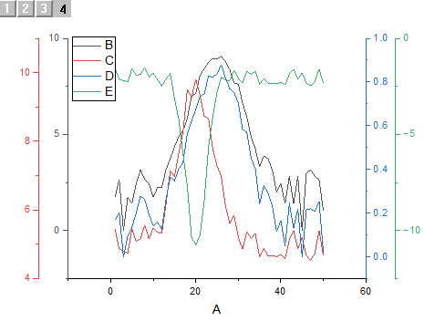
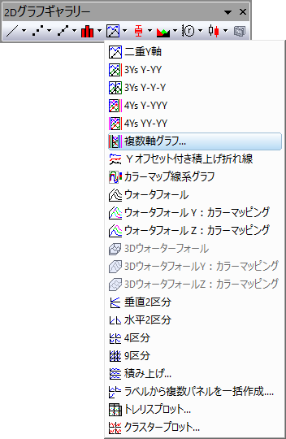
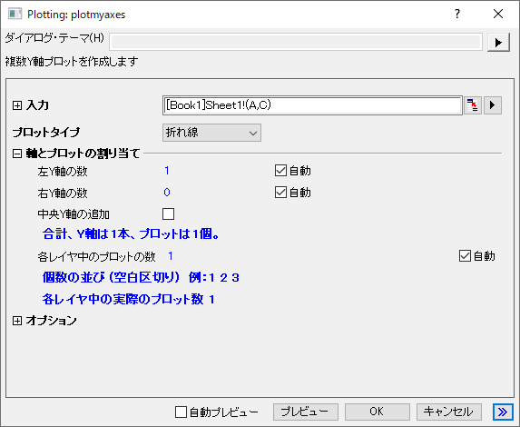

複数Y軸グラフ
MultiY-Graph
- 
必要なデータ
Y列の選択（またはY列からの範囲）が必要です。関連付けられたX列がある場合はそれを使用し、そうでない場合は、Y列のサンプリング間隔または行番号が使用されます。
グラフ作成
データを選択します。
を選択します。
または、
2Dグラフギャラリーツールバーの複数軸グラフ...ボタンをクリックします。
- 
plotmyaxesダイアログボックスが開きます。
- 
レイヤ内の各プロットのプロットタイプ、グラフの左、右、中央のY軸の数、Yタイトルと上部X軸の表示など、グラフ作成オプションをカスタマイズします。 詳細はこちらをご覧ください。
テンプレート
OffsetY.OTP (Originのプログラムフォルダにインストールされています。)
ノート
- 複数のY軸グラフは複数のレイヤで構成されています。各Y軸は別々のレイヤのものです。
- 単一X列を含むワークシートを選択したとき、各Y列はデフォルトで個別のレイヤにプロットされます。
- 複数のX列を含むワークシートデータを選択した場合、デフォルトでは、レイヤの数 = X列の数になり、各Y列データの左側で一番近いXデータに対してYのデータプロットが作成されます。
- 左Y軸の数と右Y軸の数の隣の自動のチェックを外すことで、左右のY軸の数を手動で指定できます。
- 各レイヤ中のプロットの数にある自動のチェックを外すと、各レイヤに塚するプロットをスペース区切りで指定できます。
- 各レイヤ内のプロットはグループ化され、グラフテンプレートでのプロットプロパティは1つずつ推移に設定されていることにより、それぞれのプロパティは異なるものが割り当てられます。
- プロットタイプで縦棒を選択した場合、レイヤを渡る棒/ボックスの間隔がデフォルトで有効になります。
- 複数のX軸はレイヤ1のX軸に、直接(1対1)でリンクされます。Y軸はリンクが設定されません。